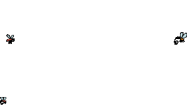
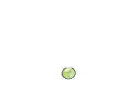

Formar grupos de tres
alumnos y discutir la
importancia de conocer
sobre los distintos
animales.
Luego, escribir un
pequeño resumen acerca
de lo conversado e
incluirlo posteriormente
en su álbum, como
introducción.
Elaborar una lista de
veinte animales, que por
lo menos incluya un
representante de cada
grupo de animales
vertebrados e
invertebrados estudiados.
Consultar la sección
Recursos - donde hay
páginas web sobre
distintos animales - para
buscar información
acerca de los animales
elegidos.
Describir cada animal,
indicando sus principales
características físicas y
cómo son sus sistemas
digestivo, respiratorio y
reproductor.
Cada descripción deberá
tener una foto del animal
elegido.
1.
2.
3.
4.